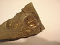

diagenesis

Definition: Diagenesis () is the process that describes physical and chemical changes in sediments first caused by water-rock interactions, microbial activity, and compaction after their deposition. Increased pressure and temperature only start to play a role as sediments become buried much deeper in the Earth's crust. In the early stages, the transformation of poorly consolidated sediments into sedimentary rock (lithification) is simply accompanied by a reduction in porosity and water expulsion (clay sediments), while their main mineralogical assemblages remain unaltered. As the rock is carried deeper by further deposition above, its organic content is progressively transformed into kerogens and bitumens. The process of diagenesis excludes surface alteration (weathering) and deep metamorphism. There is no sharp boundary between diagenesis and metamorphism, but the latter occurs at higher temperatures and pressures. Hydrothermal solutions, meteoric groundwater, rock porosity, permeability, dissolution/precipitation reactions, and time are all influential factors.
Source: Wikipedia
Wikipedia Page
Wikidata Page